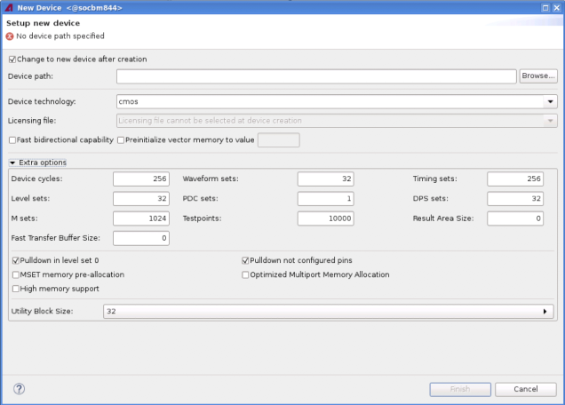

New Device wizard
With the New Device wizard, you can create a new device directory and create a link to your workspace.

- Select Change to new device after creation if you want this new device to be activated after creation.
- In the Device Path text box, you specify the path and the name of the new device.
- In the Device technology list, you choose the semiconductor process of your device. Default is cmos.
- Skip the V3 delay adjust option. It is supported only by the HSM3600 card.
- Fast bidirectional capability is no longer supported.
- Select Preinitialize vector memory to value and enter an initialization value field to reinitialize the vector memory to the specified value (supported range: 0 to 255). For more information, see row_init_vectors_with_value.
- Expand the extra options to edit the maximum values for certain system parameters. These values determine the amount of memory reserved for the respective data structures, and select RFI to RFE compatibility mode if the RFI (RF Interface) board is restricted to the RFE (RF Front End) card.
Functional changes
- Introduced in SmarTest 6.5.2
- SmarTest 7.2.2: New parameter: Result Area Size